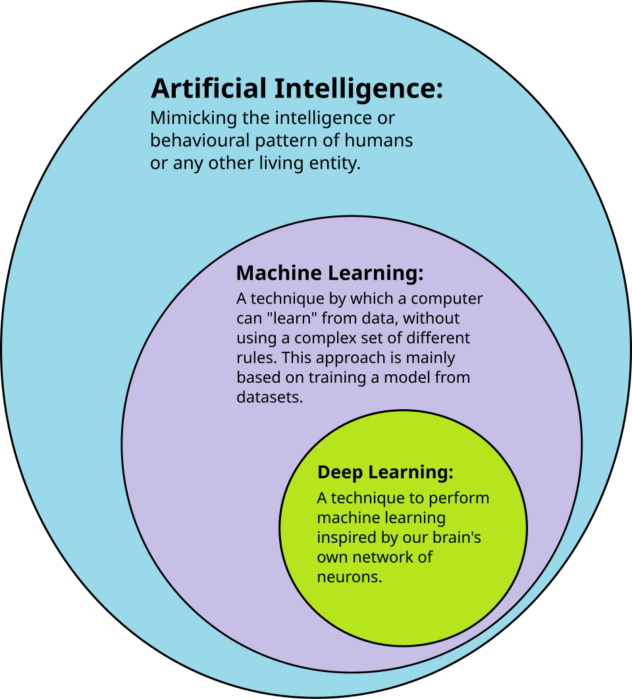

What is artificial intelligence?
Artificial intelligence, usually shortened to AI, is the part of computer science that builds programs able to do things we normally think of as human thinking. That includes recognizing a face in a photo, translating a sentence, or guessing the next word you are about to type.
Older programs only followed rules that people typed in by hand. Most modern AI works differently. It is given a lot of examples and it finds the patterns in them. That is why AI is now good at messy problems like speech and language, where no one could write down every single rule.
How the pieces fit together
- Artificial intelligence: the whole field. It covers search, planning, robotics and also learning from data.
- Machine learning: a way of building AI where the program improves by looking at data instead of following fixed instructions.
- Deep learning: machine learning done with big neural networks that have many layers. It is what made image and speech recognition work well.
- Large language models: deep networks trained on huge amounts of text. Chat assistants are the best known example.
Each one sits inside the one before it. A language model is still a neural network, a neural network is still a machine learning model, and machine learning is still part of AI.